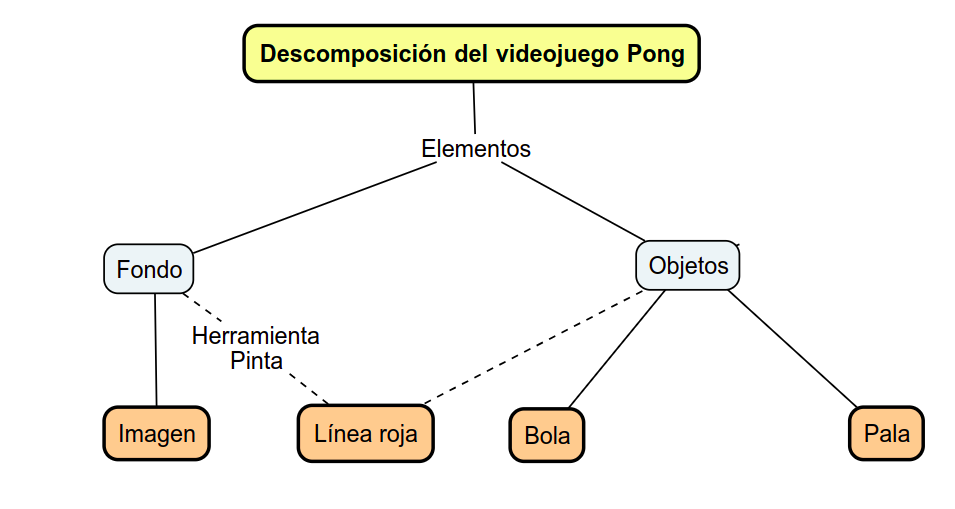
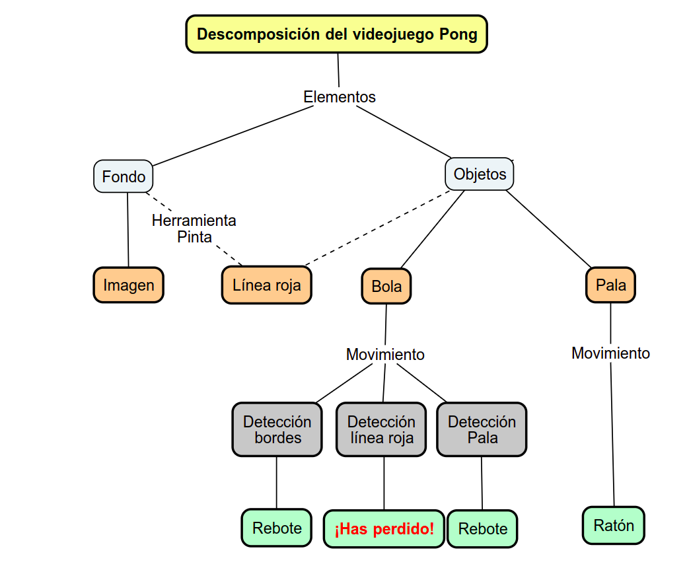
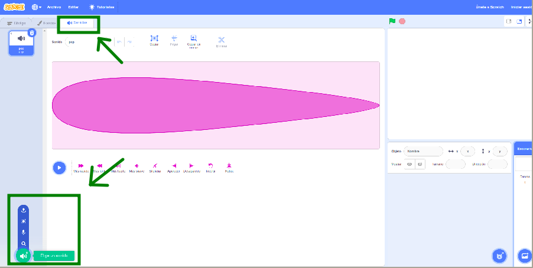
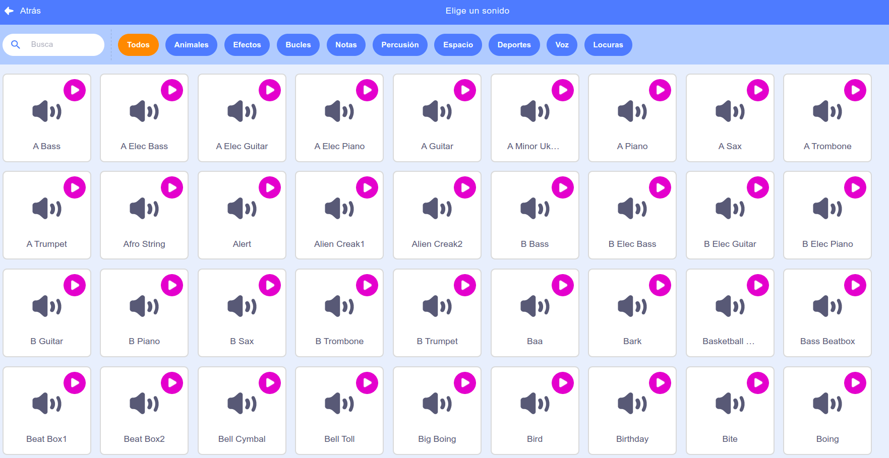
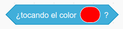

Ya hemos visto cómo funcionan los videojuegos, identificando sus elementos, características, proceso de creación y destacando la importancia de la interactividad y el uso de las variables y clones en la creación de un videojuego emocionante.
Ha llegado el momento de que te enfrentes al reto que habíamos planteado de crear tu propio videojuego para el concurso.
Recuerda que hemos practicado con Scratch tres videojuegos muy conocidos que nos servirán de entrenamiento para programar nuestro reto.
Tendremos que poner en práctica todo lo aprendido. Así que… Debéis estar muy concentradas y concentrados.
A continuación , vamos a seguir una serie de pasos que os ayudarán en nuestro objetivo.
¡Seguro que lo harás muy bien! ¡Confía en ti!
1. Elige una temática y título
Empezamos el proceso de creación y toca elegir una temática o género, que te guste y te parezca interesante, sobre el que girará el videojuego.
Ten presente que la temática que elijas será determinante en la creación de los escenarios, los objetos principales y secundarios, el sonido de fondo y los efectos, la aparición de los objetos, entre otros.
Puedes aprovechar alguno de los videojuegos vistos hasta ahora o reinventar alguno otro en Scratch.
Elije un nombre al juego que sea corto y representativo del mismo.
¡Tenemos que conseguir un videojuego que sea sencillo y desafiante a la vez!
2. Definimos el videojuego
En esta actividad vamos a definir las características de nuestro videojuego que comprenden la secuencia de eventos (principio y final), narrativa, objetivos, interactividad, la jugabilidad (funcionamiento, reglas, niveles de dificultad creciente, metas) en que se desenvuelve y los elementos que se podemos añadirle al videojuego para hacerlo lo más atractivo posible.
2.1. ¿Cuál es la historia de tu videojuego?
Define mediante un diagrama de flujo cómo será la secuencia de eventos desde el principio hasta el final del juego y si tu videojuego contará alguna historia, haz una breve descripción de la narrativa.
En pocas palabras, indica la secuencia de sucesos relevantes que transcurren de forma temporal desde el inicio hasta el final del videojuego.
Puedes crear este diagrama en tu cuaderno, ordenador, creando una infografía, pictogramas, elige una de estas opciones.
2.2. Define los objetivos del juego
Es fundamental tener muy claro los objetivos del videojuego que vamos a crear con Scratch.
Anota en tu cuaderno u ordenador el objetivo principal de tu videojuego y si es el caso, las metas u objetivos intermedios necesarios para alcanzar el principal.
Ten presente que cuanto mejor tengas definido el objetivo principal y las posibles metas u objetivos intermedios de tu videojuego, más atrayente será.
2.3. ¡Vamos con la jugabilidad!
Vamos a seguir diseñando tu videojuego, ahora nos toca definir las características más importantes que marcarán su jugabilidad.
Describe de forma breve cómo será el funcionamiento del videojuego.
A continuación, enumera cada una de las reglas que rigen el funcionamiento de tu videojuego.
Puedes responder este ejercicio en tu cuaderno, ordenador, creando una tabla interactiva, elige una de estas opciones.
2.4. Diseña los elementos para hacer atractivo tu videojuego
Elabora una lista de los elementos que puedes añadir para hacer atractivo tu videojuego.
Indica si tendrá un contador de puntos, tiempo o vidas. Además, si dispondrá de distintos niveles, enemigos o cambio en el estado de alguna de las características del videojuego.
Recuerda que estas mejoras se pueden crear con el uso de las variables en Scratch.
Para hacer interesante el videojuego, que vamos a crear, es importante que tengas en cuenta la posibilidad que existan varios de estos elementos en el videojuego.
3. Diseña las dinámicas e interactividad del videojuego
Vamos a empezar por definir los objetos y fondos; junto con sus respectivas acciones que pueden hacer en el videojuego. Con esta finalidad vamos a detallar lo que pueden hacer cada uno de los elementos.
A continuación, diseñaremos los gráficos y sonidos del juego (cómo se ve y se escucha el juego), luego debemos elegir los controles más adecuados para nuestro videojuego y finalmente completaremos este punto con el diseño de la interactividad entre los distintos elementos.
Recordad la importancia de este apartado para el correcto funcionamiento del videojuego.
3.1. Qué objetos y fondos necesitas
Elabora una esquema de los objetos y fondos que formarán parte de tu videojuego., puedes hacerlo en tu cuaderno o en formato digital en el ordenador o tableta.
Indica qué fondos tendrá y qué objetos son necesarios. En la lista destaca el personaje principal y los personajes secundarios.
En este paso puedes definir la ubicación inicial de los objetos principales y secundarios, pensando ya en su interacción con el resto de los elementos del juego. Así como los cambios de disfraz necesarios en su apariencia para simular efectos en el juego.
Para hacer interesante el videojuego que vamos a crear, es importante que tengas en cuenta la posibilidad que existan varios elementos en el videojuego.
Lumen dice ¿Necesitas ayuda con el esquema?
Te puedes guiar por los esquemas vistos cuando analizamos el funcionamiento de los videojuegos. Por ejemplo, este fue el esquema para el videojuego del Pong.

3.2. Completa el esquema con las acciones del videojuego
Completa el esquema del punto anterior 3.1. de este apartado, con las distintas acciones que harán los elementos de tu videojuego. Puedes completar este esquema en tu cuaderno o en formato digital en el ordenador o tableta, elige una de estas opciones.
Lumen dice ¿Necesitas ayuda con las acciones?
Recuerda los esquemas de las acciones de los elementos del juego que viste cuando analizamos el funcionamiento de los videojuegos. Por ejemplo, para el videojuego del Pong este era el esquema de las acciones.

3.3. ¡Diseña gráficos y sonidos atractivos!
Diseña mediante el dibujo de bocetos cómo serán los gráficos de tu videojuego. Puedes realizar estos dibujos en tu cuaderno o en formato digital en el ordenador o tableta, elige una de estas opciones.
Sobre todo es importante el boceto de la pantalla principal en donde se desarrolle el juego.
Diseña los fondos más apropiados para que cuentes la historia del videojuego. Debes centrarte en esta tarea y pensar muy bien en donde estarán ubicados los personajes para que sean escenarios adecuados para cada momento.
Aquí puedes diseñar una pantalla de inicio o fin para el videojuego.
Define y apunta en tu cuaderno los sonidos que habrá en el juego para aumentar su emoción.
Lumen dice ¿Necesitas ayuda con los sonidos?
Recuerda que tienes una biblioteca de sonidos disponibles en la Galería de Scratch. Accedes desde la pestaña Sonidos seleccionando previamente el objeto o fondo al que estará asociado.


3.4. Empieza a interactuar con los controles del videojuego
Seguimos trabajando en pareja, vamos a empezar a diseñar la interactividad del videojuego con la elección de los controles que consideréis más idóneos para los elementos, acciones y la interactividad del juego con las jugadoras y los jugadores.
Puedes responder este ejercicio en tu cuaderno o en formato digital en el ordenador o tableta, elige una de estas opciones.
3.5. Seguimos diseñando la interactividad
Vamos a diseñar qué libertad tendrán las jugadoras o jugadores en tu videojuego para crear sus propias aventuras y de una forma general, cómo será la interactividad del mismo.
Una vez que ya has diseñado las mecánicas y dinámicas del juego vamos a enumerar los sensores o aleatoriedad necesarios y los elementos involucrados en las interacciones del videojuego.
Aquí te puede servir el esquema con todos los elementos y acciones del juego elaborado en los pasos anteriores.
Puedes completar este ejercicio en tu cuaderno o en formato digital en el ordenador o tableta, elige una de estas opciones.
Lumen dice ¿Necesitas ayuda con la interactividad?
Por ejemplo, en el videojuego del Pong viste que en la interactividad entre la bola y la linea roja, tienes que se añade a la bola un bloque de control con el sensor ¿tocando color...? para detectar cuando se tocan estos dos objetos:

Puedes generar una tabla como la siguiente para una visualización mejor de tu trabajo.
| Interactividad | Objetos involucrados |
Sensor o aleatoriedad |
| Si bola toca línea roja el juego finaliza | Bola y línea roja | ¿tocando color...? |
3.6. ¿Añadimos clones?
Plantea la posibilidad del uso de los clones en tu videojuego. Si es así, escribe con qué elementos se utilizarán.
Puedes responder este ejercicio en tu cuaderno o en formato digital en el ordenador o tableta, elige una de estas opciones.
4. Antes de seguir, reflexionamos
Una vez completada la fase de diseño y antes de pasar a la fase de creación del videojuego, leed y repasad en grupo cada una de las anotaciones realizadas hasta ahora en los cuatro primeros pasos.
Si detectáis algún error o queréis cambiar algo, es justo el momento.
Esta comprobación es importante para ahorrar tiempo y realizar posibles cambios antes de la creación.
5. Crea el videojuego en Scratch
Entramos en la fase de creación del videojuego y ha llegado el momento de crear un nuevo proyecto o reinventar uno ya existente en la plataforma Scratch.
Recordad que podéis acceder a Scratch con vuestros datos de registro.
5.1. Empieza por crear o reinventar tu videojuego
Empieza por crear un proyecto nuevo o reinventa uno ya existente. Puedes aprovechar alguno de los videojuegos vistos a lo largo de este reto.
Pon un nombre al proyecto, utiliza el título que has elegido para tu videojuego en los pasos anteriores.
5.2. Completa la información de la portada del proyecto
Empieza el proceso de creación rellenando o modificando los distintos campos de la portada del proyecto en la plataforma Scratch para completar toda la información que has diseñado sobre tu videojuego.
6. Crea primero la dinámica fundamental del videojuego
En este ejercicio vamos a crear y programar los elementos mínimos con sus acciones para el funcionamiento de la dinámica principal del videojuego, recuerda que puedes utilizar los fondos u objetos disponibles en la galería de imágenes de Scratch, insertar nuevos subiéndolos desde el ordenador o crearlos con la herramienta Pinta de Scratch.
Aprovecha los bocetos que tienes elaborados en los pasos anteriores.
Programa el movimiento e interacciones de cada uno de los elementos mediante los siguientes pasos:
A continuación, crea lo básico o fundamental del videojuego y cuando te funcione de forma correcta, añade el resto de elementos de forma progresiva.
Es importante ir paso a paso de forma ordenada, probando el funcionamiento de cada uno de los programas introducidos antes de continuar con el siguiente.
- Inserta los bloques de programación necesarios para que los objetos se muevan por el fondo elegido como escenario.
- Inserta los bloques de programación necesarios para conseguir con el cambio de disfraz o fondo, los movimientos o efectos deseados.
- Programa su comportamiento al encontrarse los bordes de la pantalla.
- Añade el programa necesario para cada una de las interacciones del elemento, con los posibles sensores, aleatoriedad y bloques de control.
Verifica el correcto funcionamiento de la programación de un elemento antes de pasar al siguiente.
Una vez que consigas que funcionen correctamente los elementos básicos o fundamentales del videojuego, en el siguiente paso añadiremos progresivamente el resto de los elementos.
Clavis dice Te ayudo a organizarte
En ejercicios de este tipo hay que intentar ser práctico porque pueden ser muy complejos si sabes muchas cosas. Por ello, es recomendable que antes responder pienses en aspectos como los siguientes:
¿Sabes lo que se pide?
¿Te acuerdas de lo que debes hacer en estos casos?
¿Se te da bien organizar?
¿Te gusta hacer las cosas de forma detallada?
¿Puedes acordarte de algún otro ejercicio parecido que hayas hecho?
¿Hay algo que ya hayas usado para un ejercicio parecido?
¿Se te da bien programar?
Pensar sobre lo que sabes hacer y comentarlo a las compañeras y compañeros facilita poner en marcha las habilidades necesarias para responder a este tipo de tareas. Recuerda que es una buena estrategia cuando te piden que crees o inventes algo.
7. ¡Vamos con las mejoras para tu videojuego!
Una vez que ya tienes funcionando la dinámica principal de tu videojuego, es el momento de crear y programar las variables necesarias para cada una de las mejoras que has diseñado para hacer más interesante y atrayente tu videojuego de Scratch.
Al igual que en los pasos anteriores, ve probando el correcto funcionamiento de cada paso, antes de pasar al siguiente.
7.1. ¡Vamos con las variables!
A continuación crea y añade la programación a las variables diseñadas para hacer más interesante y atrayente el videojuego.
Recuerda ponerles un nombre corto y representativo de su función.
Es muy importante que los bloques de programación de cada objeto del juego se encuentren bien ordenados.
Al igual que en los pasos anteriores, ve probando el correcto funcionamiento de cada variable antes de pasar a la programación de la siguiente.
7.2. Dale emoción al juego con la música y sonidos
Vamos a insertar los sonidos para los distintos momentos de nuestra historia, puedes utilizarlos tanto en un cambio de fondo, como en un momento determinado del juego. Verifica si te sirve alguno de los sonidos disponibles en la Galería de Scratch.
Puedes elegir desde el ordenador música de fondo, descargada previamente de internet o almacenada en el ordenador, para crear una atmósfera adecuada.
Recuerda también, seleccionar sonidos adecuados para el inicio o fin del juego, o para cuando el personaje principal acierte en sus metas o fracase en un objetivo del videojuego.
7.3. Añade una portada al videojuego
Crea y programa una portada de inicio o fin del videojuego.
Aquí puedes añadir alguna otra mejora de las que hemos vistos a lo largo de estos apartados.
7.4. ¿Usas clones en el videojuego?
Si has diseñado el uso de clones en tu videojuego, es el momento de programar su creación y comportamiento. Luego, verifica su correcto funcionamiento.
8. Debugging del videojuego
Comprueba el funcionamiento correcto del videojuego y haz una depuración de la programación del mismo, detectando posibles errores y corrigiéndolos.
Clavis dice ¿Cómo ha sido la experiencia?
Lo más importante es haber puesto en práctica todo lo aprendido. Por lo que es necesario que, antes de continuar, nos paremos a reflexionar sobre lo aprendido y valora qué habilidades tenías, con qué recursos contabas y cuáles han sido tus dificultades a la hora de realizar estas tareas.
Puedes responder a estas cuestiones o que te las pregunte una compañera o compañero a modo de entrevista. ¿Qué te parece?
- ¿Has sido capaz de diseñar el funcionamiento del programa?
- ¿Te ha resultado difícil realizar el esquema de acciones del juego?
- ¿Has diseñado algún fondo u objeto con la herramienta Pinta?
- ¿Has entendido el código de Scratch?
- ¿Has replicado alguno de los tres videojuegos analizados?
- ¿Has sincronizado de manera óptima las interacciones y efectos de sonido de los diferentes elementos del juego?
- ¿Has podido programar tu primer videojuego?
- ¿Has creado los programas de cada elemento del videojuego?
- ¿Has conseguido que tus objetos se muevan con agilidad?
- ¿Has arreglado los bugs de algunos programas?
Tras responder a estas cuestiones, comparte con tus compañeras o compañeros qué puedes hacer la próxima vez para mejorar en las cuestiones que te han resultado más complicadas.